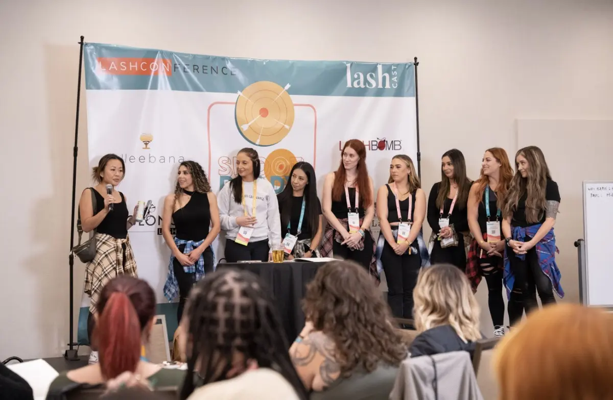
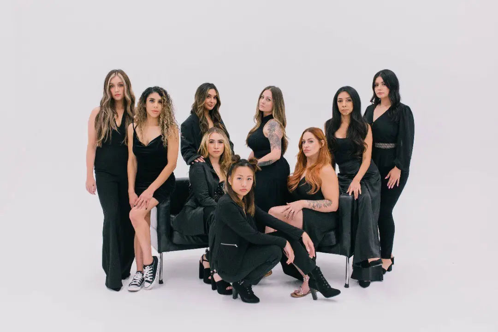
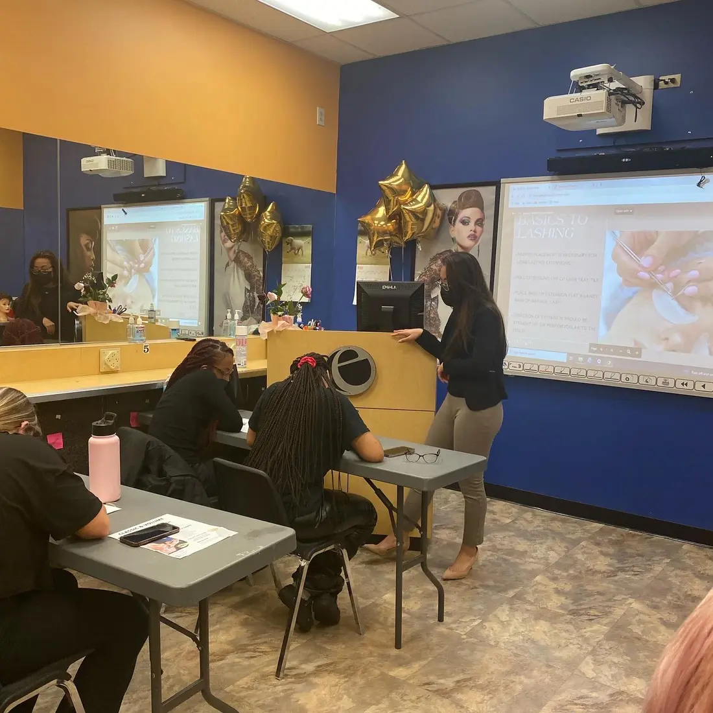
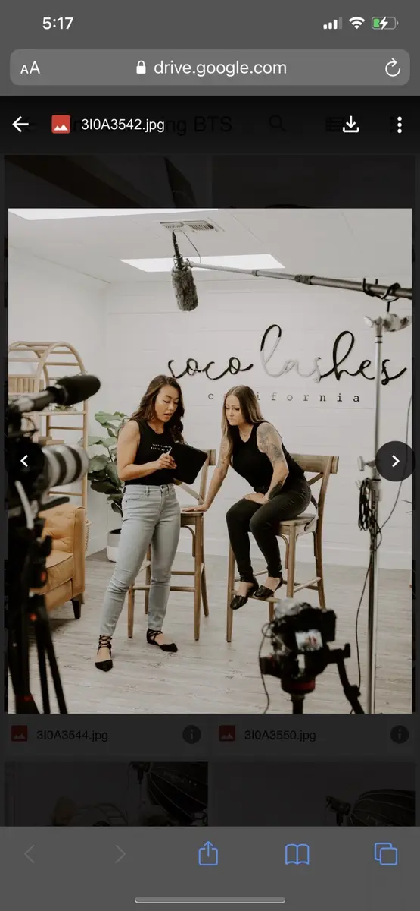

01 · Beauty
Built and led
Three concurrent studios. Teams, service delivery, customer relationships and retention.
I opened my first salon at 18, grew to three studios, and moved into beauty commerce, marketing leadership and product development. Today, I turn customer insight into connected data, lifecycle journeys and useful AI products.

Founder → Marketing leader → MarTech product builder
Three concurrent studios. Teams, service delivery, customer relationships and retention.

SocoLashes commerce and Academy, beauty education, campaigns and lifecycle journeys.

Customer data, integrations, CRM activation and governed AI tools at JIDOKA.
My work includes event tracking, identity and audiences, segmentation, abandoned-cart recovery, email/SMS sequences, API integrations and campaign measurement.
Four examples, each showing a different part of the customer journey.
Shopify segmentation, abandoned-cart journeys, digital education and customer experience built with the team.
$200K+ company MRR · 40% YoY growth during my 3-year tenureEvidence-backed prospect discovery, fit scoring, personalized outreach drafts grounded in real data, CRM connections and feedback-guided research.
125 → 10 minutes per ~5 qualified leads · 92% less timeExplore Scout ↗Trend aggregation, content concepts, film scripts, captions and automated social publishing—used to market Scout.
Research → creative → distribution in one workflowInvestor audience qualification, lead scoring, segmentation and sales-call routing.
2,225 waitlist leads · ~60% signup-to-booked-call conversionGrounded in the same intersection I’ve worked across: beauty, customer experience and platform architecture.
KPIs: match rate · data completeness · sync accuracy
KPIs: repeat purchase · retention · incremental revenue
KPIs: cycle time · engagement · conversion lift
These are product opportunities I would validate with e.l.f.’s Product, Data, Engineering, Commerce and Integrated Marketing teams—not assumptions about its current stack.
Strategy, scripting and team production across beauty services, aesthetics, e-commerce and education. My approach connects the creative that earns attention with the data and journeys that turn interest into action.
Beauty service trust and discovery
Credibility, education and consultation intent
Product discovery and e-commerce creative
Scout agent workflows, feedback controls, JIDOKA Core, data pipelines, integration patterns and more are preserved in a separate technical portfolio.
Open technical deep dives